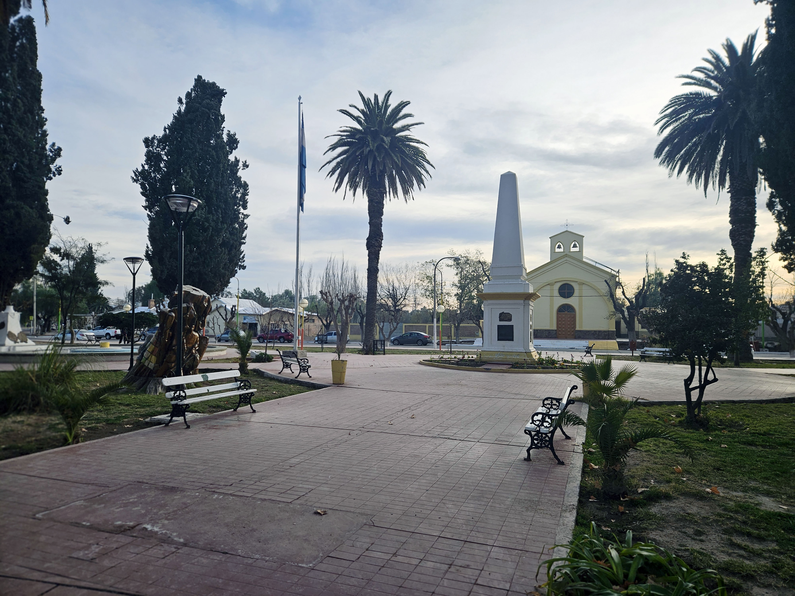
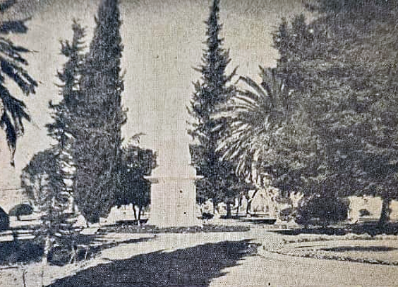
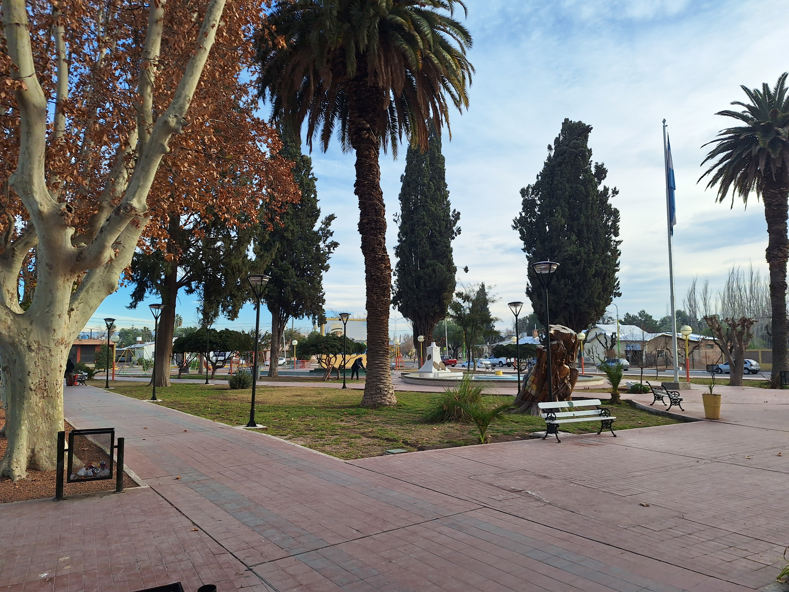
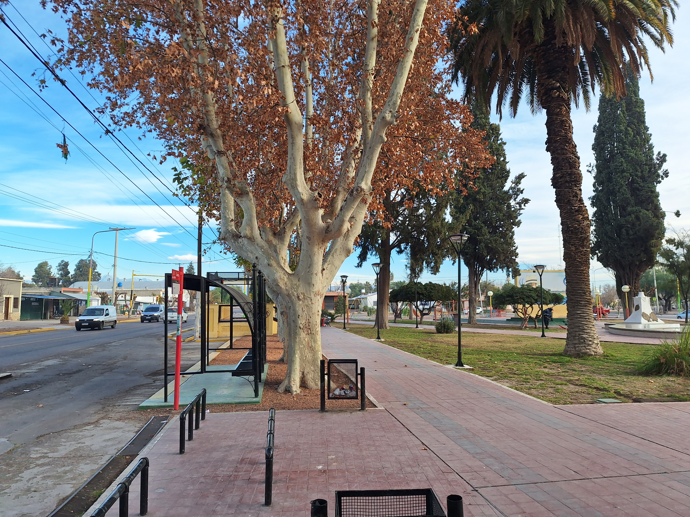
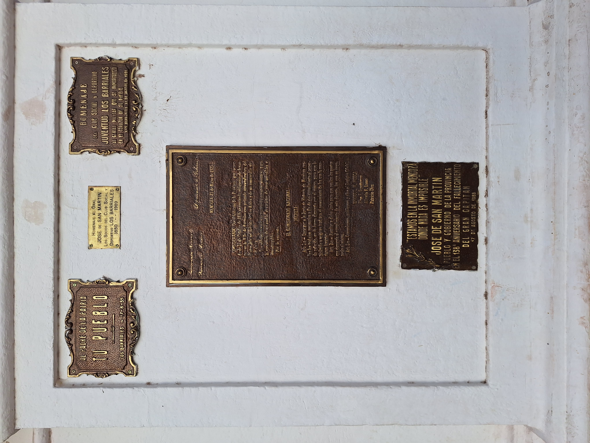

La Plaza Mercedes Tomasa de San Martín constituye el principal espacio público y cívico de Los Barriales. A su alrededor se desarrolló el centro institucional del distrito, donde se localizan edificios representativos como la Capilla Nuestra Señora de la Luz y la Unión Vecinal. Desde hace más de un siglo es el escenario de encuentros, celebraciones y actividades comunitarias, consolidándose como uno de los espacios de mayor valor identitario para la población.

En su sector central se emplaza la Pirámide de Los Barriales, inaugurada el 9 de julio de 1925 para señalar el sitio asociado a la antigua chacra del General José de San Martín. Su construcción dio cumplimiento, más de un siglo después, al decreto del 17 de octubre de 1816 que proponía levantar un monumento en homenaje al Libertador. Para su diseño se tomó como referencia la histórica Pirámide de Mayo, convirtiéndose en uno de los principales símbolos sanmartinianos del departamento.

Más allá de su valor histórico, este conjunto resume parte de la identidad de Los Barriales: un lugar donde convergen la memoria sanmartiniana, la vida comunitaria y la historia de un distrito que creció al compás de la agricultura y los caminos.


Sobre su lado sur se extiende la Ruta Provincial 60, principal eje de vinculación de Los Barriales con el Área Metropolitana de Mendoza. Una alineación de plátanos de gran porte acompaña este frente, conformando uno de los elementos paisajísticos más característicos de la plaza.

